Cinco fases de muestreo en campo
Cada visita a los estanques sigue el mismo protocolo, desde la toma de la muestra de agua hasta el análisis de gases disueltos en laboratorio. Cuatro estanques de tierra (identificados como 11, 5, 3 y A4) se monitorean semanalmente siguiendo estos pasos.
Toma de muestras de agua
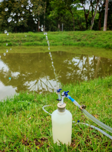
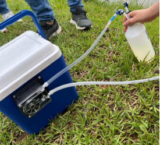
Extracción de agua a una profundidad definida para su posterior análisis en laboratorio.
- Selección del punto de muestreo.
- Preparación y verificación del equipo.
- Extracción de agua con bomba peristáltica.
- Renovación del volumen de la botella (≥ 2 volúmenes).
- Sellado y conservación de la muestra.
Medición de flujos de CO₂
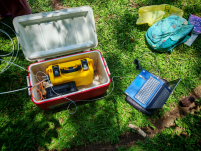
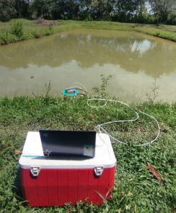
Cuantificación de las emisiones de dióxido de carbono desde la superficie del agua.
- Cámara cerrada sobre la superficie del estanque, conectada a un analizador Li-COR + LoggerNet.
- El equipo se estabiliza 30 minutos antes de medir.
- Se registran 8 minutos de datos por punto, con hora de inicio y fin.
Parámetros fisicoquímicos in situ
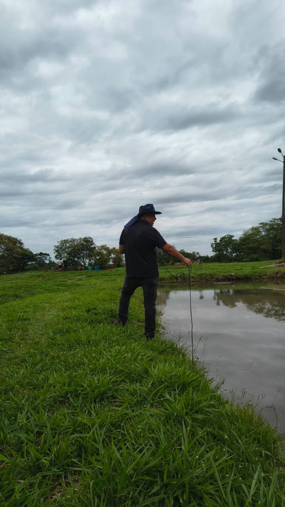
Medición directa en campo de pH, temperatura y oxígeno disuelto — variables clave que condicionan la generación y emisión de GEI.
- Verificar el equipo multiparámetro (estado y calibración).
- Limpiar el electrodo para evitar contaminación cruzada.
- Sumergir el sensor sin contacto con sedimentos.
- Esperar la estabilización de la lectura.
- Registrar pH, temperatura (°C) y OD (ppm y % de saturación).
Muestreo de aire ambiente
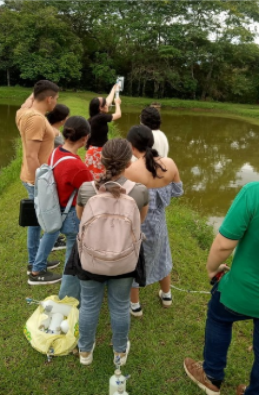
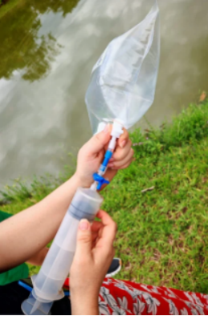
Captura de aire ambiente como "blanco atmosférico" — un punto de referencia para comparar contra las concentraciones de gases del estanque.
- Se llena la bolsa con el brazo completamente extendido, alejado del rostro.
- Esa distancia evita que el CO₂ exhalado contamine la muestra durante el llenado.
Muestreo de gas disuelto
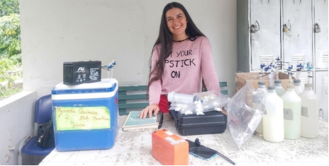
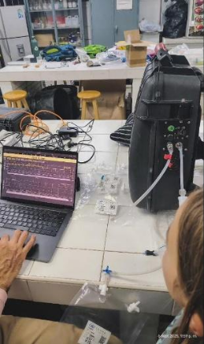
Determinación de gases disueltos en el agua mediante equilibrio con un espacio de cabeza (headspace), analizados después en un equipo Picarro de alta precisión.
- Se conecta una botella a la bomba peristáltica y una bolsa de gas atmosférico al tope de la botella.
- Con la bomba encendida, se extraen 500 mL de agua mientras se inyecta aire de la bolsa hacia la botella.
- Se agita la botella (500 mL aire + 500 mL agua) durante 2 minutos para favorecer el intercambio gaseoso entre fases.
- Se inyecta nuevamente el agua, desplazando el gas hacia una bolsa Tedlar.
- El gas desplazado queda capturado en la bolsa Tedlar.
- Se almacena identificado (muestra, fecha, hora, lugar) para su análisis en el Picarro.
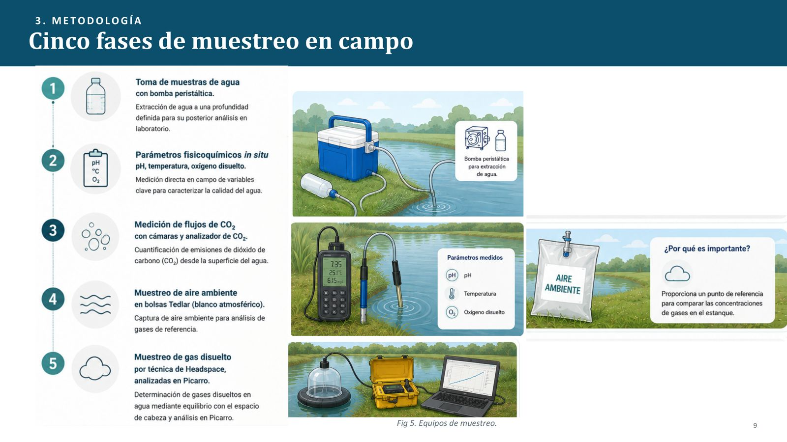
Resumen visual de las cinco fases de muestreo en campo.
Equipos, materiales y qué mide cada variable
| Equipo / material | Uso en campo |
|---|---|
| Analizador Li-COR + LoggerNet | Flujo de CO₂ en cámara flotante |
| Analizador Picarro | Análisis de gases disueltos (headspace) |
| Equipo multiparámetro | pH, temperatura, oxígeno disuelto (ppm y % saturación) |
| Bomba peristáltica portátil | Toma de muestras de agua |
| Bolsas Tedlar (500 mL) | Muestras de aire ambiente y gas desplazado |
| Botellas y mangueras | Técnica de headspace |
| Variable | Qué explica |
|---|---|
| CO₂ y CH₄ | Concentración disuelta y flujo directo desde el agua |
| pH | Equilibrio del CO₂ en el agua |
| Temperatura (°C) | Solubilidad de gases y actividad microbiana |
| Oxígeno disuelto (OD) | Condiciones redox — aeróbico o anaeróbico |
El muestreo en campo
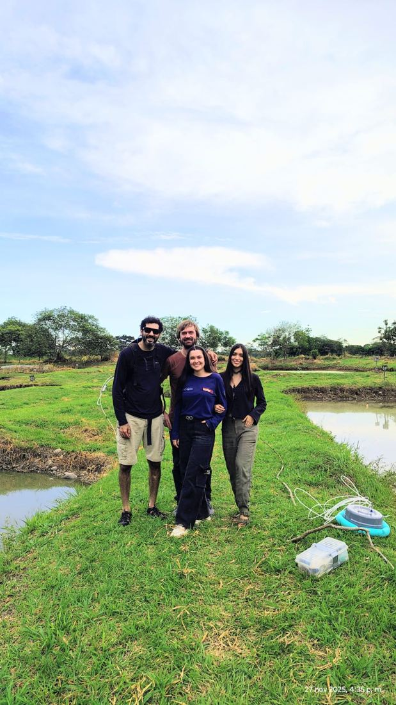
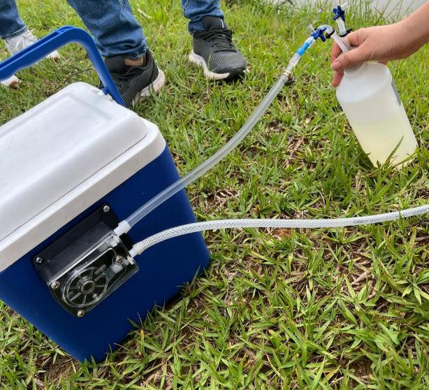
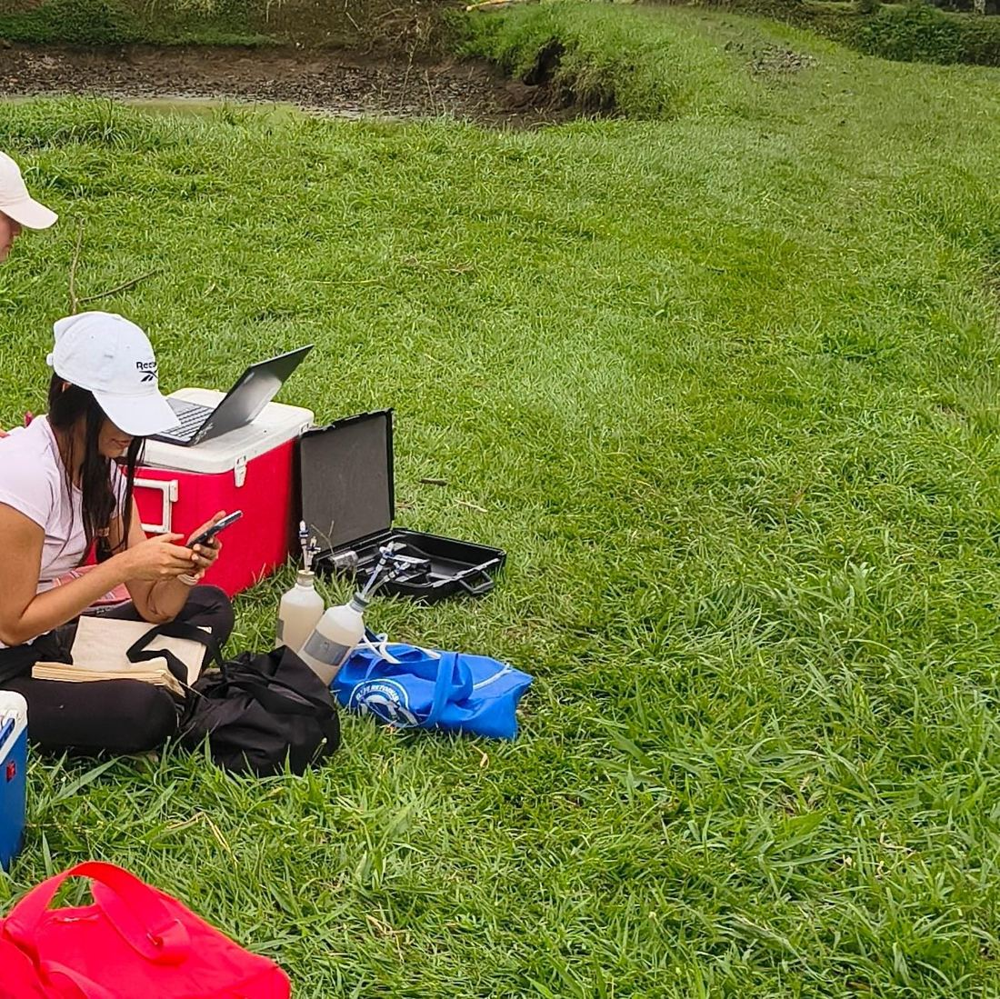
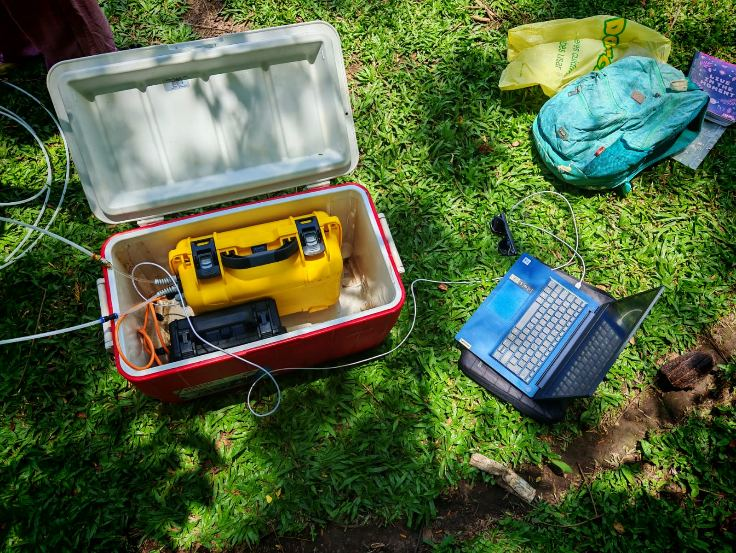
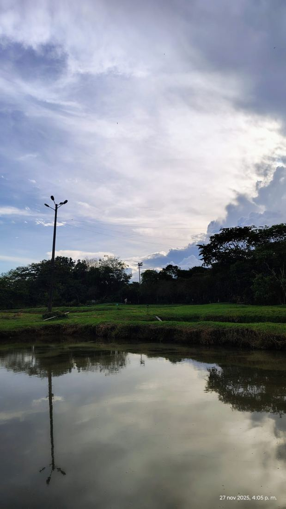
¿Por qué combinar tantas técnicas?
El pH y la temperatura cambian rápido y deben leerse in situ; el CO₂ superficial se mide mejor como flujo directo; y el metano, disuelto en concentraciones bajas, requiere la sensibilidad de un equipo como el Picarro tras un paso de equilibrio (headspace). Combinar las cinco fases da una fotografía completa y confiable de cada estanque.
¿Tienes dudas sobre alguna fase?
Usa el asistente de IA (ícono de chat, abajo a la derecha) y pregúntale directamente — por ejemplo, "¿qué reactivo o licor se usa en el headspace?" o "¿por qué el equipo Li-COR se estabiliza 30 minutos antes de medir?".
Ver los datos resultantes →